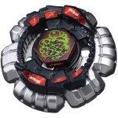

Counter Escolpio 145D
| Counter Escolpio 145D | |
|  | |
| Number: | BB-86 |
|---|---|
| System: | Hybrid Wheel System |
| Type: | Defense |
Contents
Note: This Beyblade was released as apart of the Beyblade Deck Attack & Defense Set and was re-named "Counter Scorpio 145D" and released as a Starter instead of inside a Set by Hasbro.
Face: Escolpio
The Face on this Beyblade depicts Scorpio, the eighth astrological sign in the Zodiac. In Hasbro's release, the "Escolpio" writing is smudged.
Clear Wheel: Escolpio
- Weight: 2.3 grams
The Escolpio Clear Wheel is of a black colour, featuring 2 "Stingers" on opposing ends of the Clear Wheel. It is the second lightest Clear Wheel available. Due to Escolpio's small shape and slopes, using Escolpio increases contact with the Metal Wheel, and decreases contact with the Clear Wheel. This is particularly useful for increasing a Beyblade's Smash Attack and its potential to destabilize the opposing Beyblade.
Use in Attack Customization
Escolpio can be used in the powerful Smash Attack combination Flash Escolpio GB145RF/R²F.
Metal Wheel: Counter
- Weight: 29.2 Grams
Counter is styled like a HWS version of the Metal System Leone. It possesses six similar mane-like projections that coronate its circumference. The gaps between the six projections are too small to provide consistent smash for a competitive Attack Customization. Counter still showcases fair Smash Attack, but unlike Leone, it lacks the same degree of recoil. This is because the projecting paws are more compact and rounded than its counterpart?s. The lowered recoil makes it a better, albeit underwhelming, choice for a defensive combo.
Use in Attack Customization
If you somehow lack access to competitive wheels, Counter can be used to some degree of effectiveness in Smash Attack customs such as MF Counter Bull H145RF.
Track: 145
| Weight: | 1.47 grams | Full Width: | 20 mm | Minimum Width: | 18 mm | Height: | 14.50 mm |
145, along with its variants (C145, DF145, etc.), was once the highest Track available, until the 230 Track was released with Flame Byxis. It can be used in Stamina customs to great effect due to its tall height, which allows for more wobbling as the Beyblade loses its spin velocity. However, gimmick-paired Tracks like BD145 have immensely outclassed their original bare variant, on top of several taller gimmick Tracks surpassing 145 as well against heavy, mid-height Attackers. Even in Stamina battles, 145 does not offer enough balance: Tracks like AD145 and W145 provide a good center of gravity, and aid with a slight downforce to maintain stability.
Bottom: Defense
| Weight: | 0.68 gram | Full Width: | 15.55 mm | Tip Width: | 8.94 mm | Full Height: | 8.89 mm | Tip Height: | 7.59 mm |
This is a Defense Bottom, which acts as a wider version of a Sharp tip. When hit by an opponent, a Beyblade with this Bottom will have lessened recoil and will recover from attacks more efficiently than a Sharp Tip. However, while recovering, the Defense Bottom will cause the Beyblade to lose some stamina, caused by the added friction.
Use in Stamina customization
D can be put to use in the combination Duo Cygnus 230D. D is a superior choice for 230 because it retains balance more easily than WD.
Other Versions
- Rock Scorpio T125JB - Hasbro BEYBLADE: Metal Fusion Starter
- Poison Scorpio M145Q - Hasbro BEYBLADE: Metal Fusion Burning Firestrike Faceoff Set (Opaque dark gray Clear Wheel)
- Killer Escolpio 100D - Random Booster Vol. 6 (Transparent green-grey Clear Wheel)
- Burn Escolpio 100RF - Random Booster Vol. 6 (Transparent dark grey Clear Wheel with turquoise stickers)
- Counter Scorpio - Hasbro BEYBLADE: Metal Masters Starter
Gallery
Overall
This Beyblade features two top tier parts: 145 and D. However, considering these parts can be found in more useful releases this Beyblade should only be bought for collection purposes.